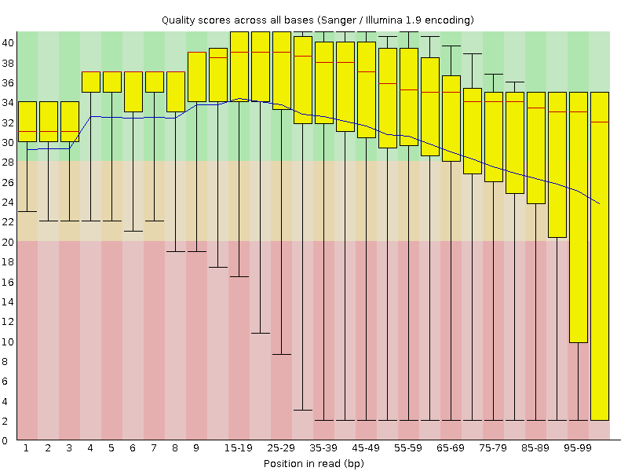
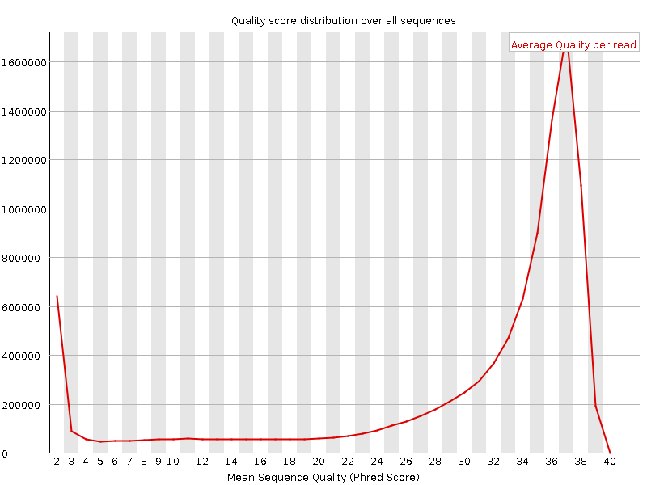
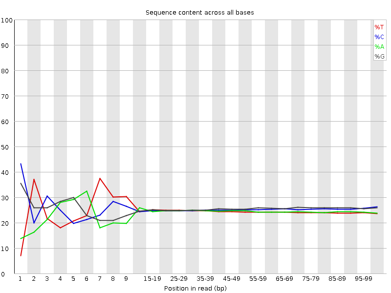
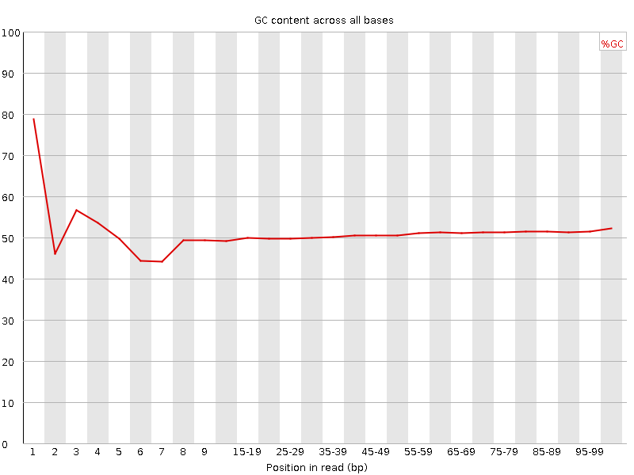
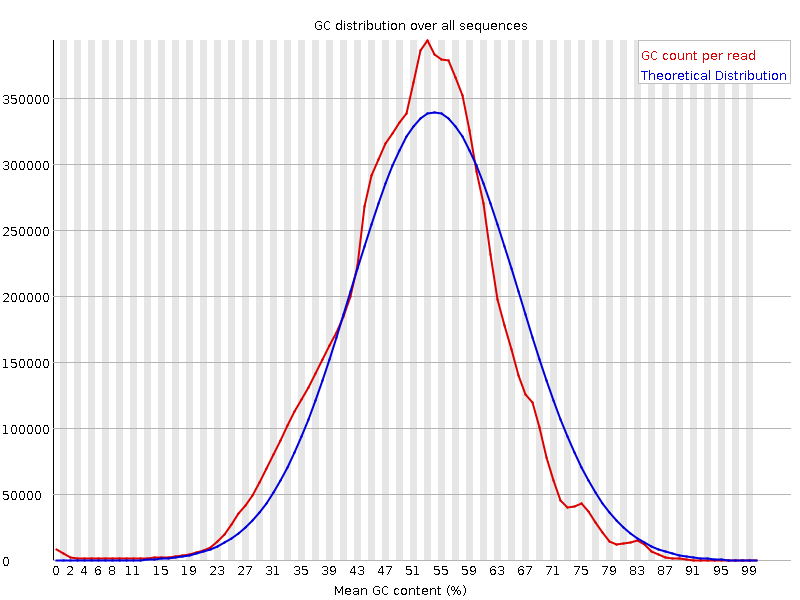
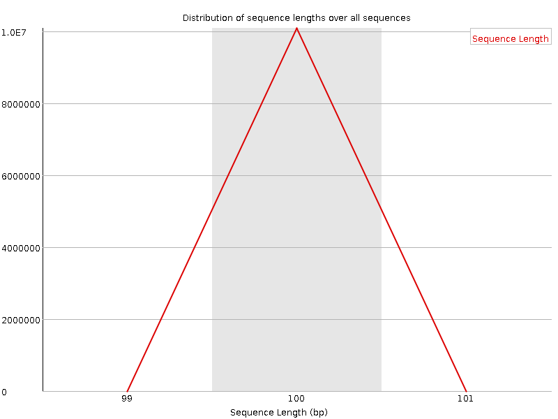
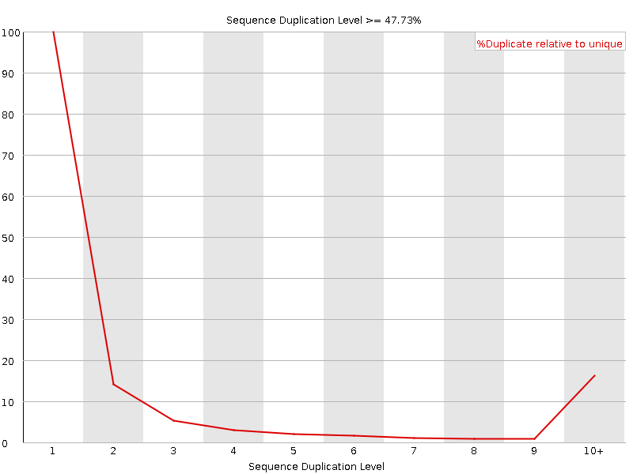
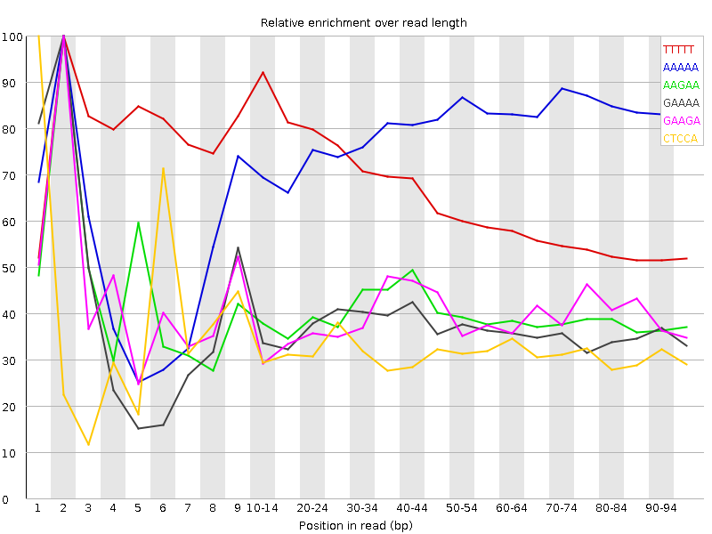

![[OK]](Icons/tick.png) Basic Statistics
Basic Statistics
| Measure | Value |
|---|---|
| Filename | F_similis_NA_FW_3_R2.fastq.gz |
| File type | Conventional base calls |
| Encoding | Sanger / Illumina 1.9 |
| Total Sequences | 10089242 |
| Filtered Sequences | 0 |
| Sequence length | 100 |
| %GC | 51 |
![[FAIL]](Icons/error.png) Per base sequence quality
Per base sequence quality

Per sequence quality scores

Per base sequence content

Per base GC content

![[WARN]](Icons/warning.png) Per sequence GC content
Per sequence GC content

Per base N content

Sequence Length Distribution

Sequence Duplication Levels

Overrepresented sequences
| Sequence | Count | Percentage | Possible Source |
|---|---|---|---|
| TTTTTTTTTTTTTTTTTTTTTTTTTTTTTTTTTTTTTTTTTTTTTTTTTT | 17872 | 0.17713917457822898 | No Hit |
| CTGCAAGTCATTTAGCACCACGTTCTCCACAAACATGCTATGCGTAATCG | 17500 | 0.17345207895697218 | No Hit |
| AAAGAAACTAACCAGGATTCCCTCAGTAGCGGCGAGCGAAGAGGGAAGAG | 13120 | 0.1300395014808843 | No Hit |
Kmer Content

| Sequence | Count | Obs/Exp Overall | Obs/Exp Max | Max Obs/Exp Position |
|---|---|---|---|---|
| TTTTT | 7008565 | 8.159401 | 12.409161 | 2 |
| AAAAA | 4768570 | 5.6138663 | 7.192204 | 2 |
| AAGAA | 1941765 | 2.1838195 | 5.443869 | 2 |
| GAAAA | 1863095 | 2.0953429 | 5.629523 | 2 |
| GAAGA | 1938500 | 2.0827258 | 5.2320547 | 2 |
| CTCCA | 1926725 | 2.0279315 | 6.3013287 | 1 |
| TTTAA | 1702535 | 1.9909625 | 5.714024 | 7 |
| CTTTT | 1735715 | 1.9524777 | 5.959904 | 1 |
| CTCCT | 1776455 | 1.865601 | 6.0937676 | 1 |
| GTTTT | 1631815 | 1.8189268 | 7.6987257 | 1 |
| CTGGA | 1720850 | 1.7784835 | 5.658191 | 1 |
| CTGAA | 1633490 | 1.767165 | 5.154533 | 1 |
| CTGCA | 1616400 | 1.6858501 | 5.4342947 | 1 |
| GGAAA | 1534055 | 1.6481897 | 6.9818783 | 1 |
| GGGAA | 1430975 | 1.4687386 | 5.378464 | 1 |
| GGGAG | 1496855 | 1.4677037 | 5.384207 | 1 |
| ATTTA | 1233600 | 1.4425849 | 5.2062163 | 6 |
| CTCCC | 1406755 | 1.4274521 | 5.389338 | 1 |
| CTGGG | 1373585 | 1.3561525 | 5.9625144 | 1 |
| GTCGG | 990560 | 0.97798854 | 5.016377 | 1 |